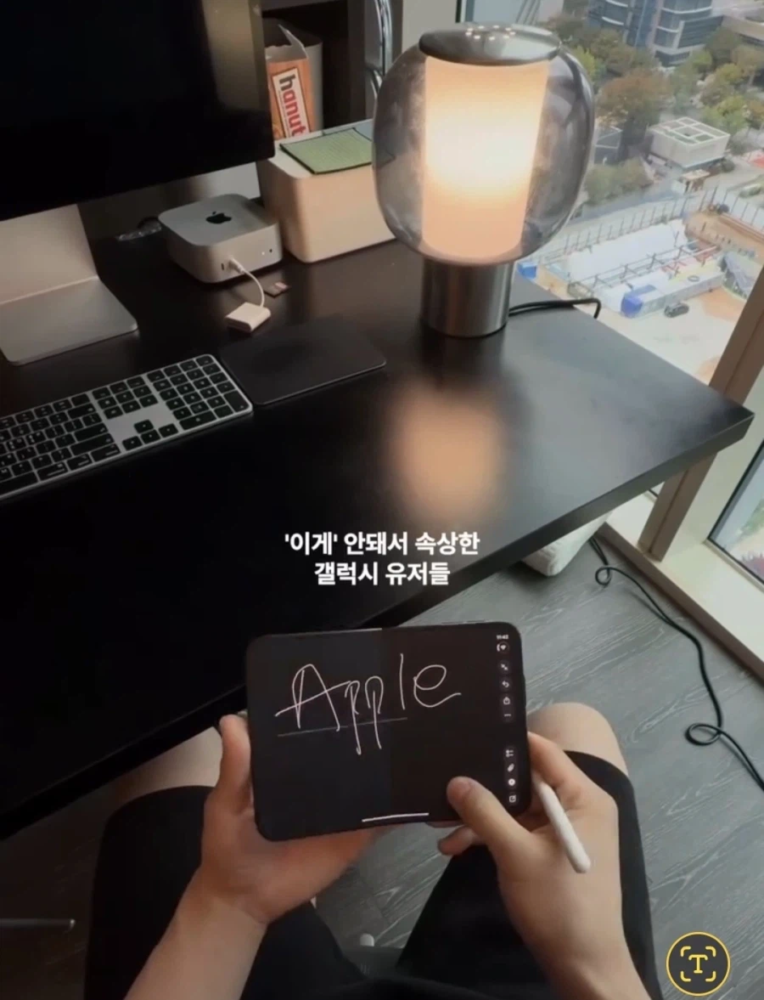

바로 결함 on

바로 결함 on
펜 간절해 ㅅㅂ
인스타 찾아가보니까 자동으로 밑줄쳐주는 기능이라고 하는데 아이폰을 안써봐서 진짠지 가짠지 모르겠다
맡긴함
저거 다음 영상이 듀오로 에뮬레이터쓰는건데 디스플레이 멀쩡함
저거 베타라서 밑줄 기능 찐빠일거임
휴 한줄이네 다행이다
저기 키보드도 애플꺼임?
저래 납작하면 쓸 때 안불편하나?
로지텍도 저런시리즈 몇개 내는데 저런키보드는 수납이런거에 장점있어서 키감이나 쓸때불편하거 감수하고 쓰는거 같음
mx keys같은데 맞다면 안불편하고 좋음. 페어링도 빠릿빠릿하게 잘 붙고 키감도 좋고. 그리고 높으면 손목아픔
나는 낮은 키 구분해가면서 눌리는 게 더 불편하던데 손목 나갈 거 같고,,,
인체형태에 따라 개인 기호가 달라지는 건가?
나는 평범한 키보드 형태가 깊이감으로 키마다 구분해서 치키 편해서 낮은 거 못쓰겠음
저건 애플 정품 블랙키보드 같은데, 꽤 편함.
손목을 세워서 쓰지 않아도 되는 형태라, 좀 오래 칠 때 편하다고 해야 하나?
거기다 소음 별로 없어서 사무실이나 공공장소에서 쓰기 좋음. 가격이 좀 시발이라 그렇지.
그래서 대용으로 잘 쓰는건 로지텍 mx 시리즈.
미니는 가지고 다니기도 좋고, 배터리 오래가고 좋음.
근데 로지텍mx 시리즈의 단점 중 하나는 윈도우에 물려서 쓰면
스페이스바가 오른쪽으로 살짝 가 있어서, 평소에 한영키 누르던 습관대로 엄지 찍으면 스페이스바를 누르고 있음ㅋㅋ
저거 펜슬오류같은데 선 그어지는게 ㅋㅋㅋ 별개로 갤폴드는 있다가 뺀건데
다음편 ㅈㄴ 궁듬하네 ㅋㅋ
카메라 깜빡거리는거 신경쓰이네
스마트폰 쓰면서부터는 안드로이드만 썼지만 아이폰이든 갤럭시든 그냥 지 쓰고 싶은거 쓰면 되지
왜 저렇게 지가 쓰는 브랜드에 과몰입해가지고 저러는거야
저런다고 애플이 뭐 주나 주식이라도 졸라 넣어놨나...
인간은 본능적으로 외로움을 피하고 어딘가에 소속되기를 원함. 인간은 자신을 어떤 집단에 포함시킴으로써 '내가 누구인지'를 정의함. 이걸 집단정체성이라고 함.
또한 개인이 거대한 집단과 자신을 동일시하며 심리적 위안을 얻음. 내가 속한 집단이 인정받으면 마치 내가 이뤄낸 것처럼 자부심을 느끼고 반대로 반대로 공격을 받으면 자신이 공격받는 것과 동일하게 간주함.
주로 이러한 심리 현상은 저신의 현실이 팍팍하거나 불안할 때 강화되는 경향이 있으며, 이를 통해 낮아진 개인의 자존감을 보상받으려 하게 됨.
개드립에 개많음 앱등이랑 삼엽충들 폰에 과몰입해서 자기가 현명한 소비자라는 인정을 받고 싶어하는거 같음 ㅋㅋㅋㅋㅋ
삼성은 힌지 결함 없어서 너무 똑땅해
어이가없네 ㅋㅋㅋㅋㅋㅋ
반품하러 가실듯 ㅋㅋ
흰줄 저거 결함은 아니고 애플 노트앱에 애플펜슬로 글씨쓰면 인식되는거 같은데
아 그럴수도 있겟다 근대 위치 절묘하긴하네 ㅋ
다음 릴스보면 화면 멀쩡함
글씨 밑줄 기능일 수도 있음
야 삼숑이도 한줄 힌지에러나게해줘. 갬성좀 따라가봐라 좀. 그러니까 안팔리자너.
그건 모르겠고
아이폰 쓰는 사람이 어떤 생각으로 사는지는 알겠다ㅋ
저걸 떠나서 어차피 애플 유저들은 살 건데 문제 해결을 왜 하지.
끌씨 밑줄 쳐지는 기능인가보다
영상 찍고 조회수 빨고 환불받고 일석삼조아님?
궁금한게 폴드 펜 미지원임?
그니까 따로 폰을 사도 안되는건가?
인식은 되겠지
ㅇㅇ 두께 낮추고 펜 빼면서 패널을 아예 뺐을거임
와 영상 얼마짜리냐ㅋㅋㅋ
일단 저사람 애플과시 ㅈㄴ하고 다니긴함
저 영상보면서 궁금한건 거의 AV 앵글인데
카메라를 입에 물거나, 이마에 달고 찍는 건지 모르겠네 ㅋㅋㅋ
보통 1인촬영이면 본인이 앵글도 확인하며 찍을텐데
광각이라고 해도 뭘로 들고 있는거야 ㅋㅋㅋ
요즘은 스마트안경으로 많이들찍고 생각보다 방법여러게임
저거 확 털어서 열면 안좋은거아님? 왜 굳이....
애초에 지금 문제가 되는 부분도 오른쪽 하단 부 아님?
다른 영상에선 문제 없는거 같은데 ㅎㅎ
중요한거 자동밑줄 그어주는 갬성기능임
앱등이들 인생 최대업적=아이폰유저
여기 원본 주소좀 찾아줘 ㅋㅋㅋㅋ 가서 조롱댓글 좀 구경하게
뭐여 실시간 고장난거임?
액정파손도 파손인데,
저 기다란 펜을 저렇게 달랑달랑 외부에 불안하게 붙여가지고 써야하는게 진정 그리도 통쾌하고 쿨하다고 생각하는걸까 ㅋㅋㅋ
앱둥이들있어서 애플망할수가 없다
팬기능은 있었는데 그냥 뺀거고
밑줄은 펼 때만 보이고 닫으면 안보이는기 디폴트임?
저 펜슬 필압감지 안되던데 그냥 럭키 터치펜아님?
소프트웨어 찐빠
다음 영상에선 멀쩡함